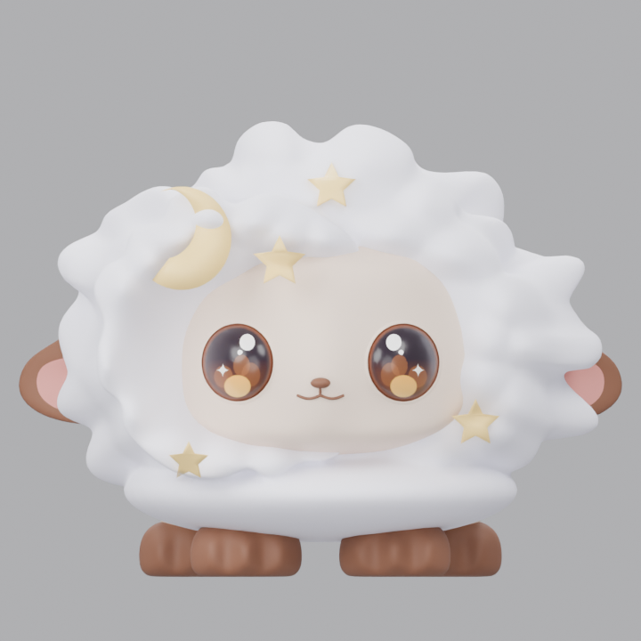
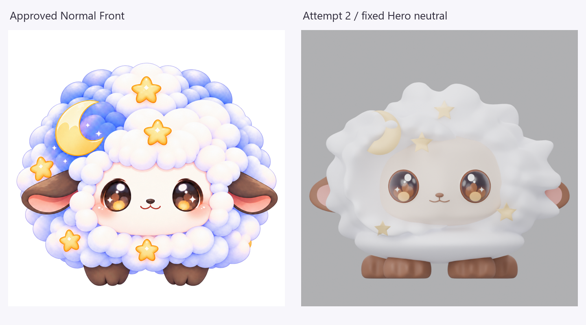
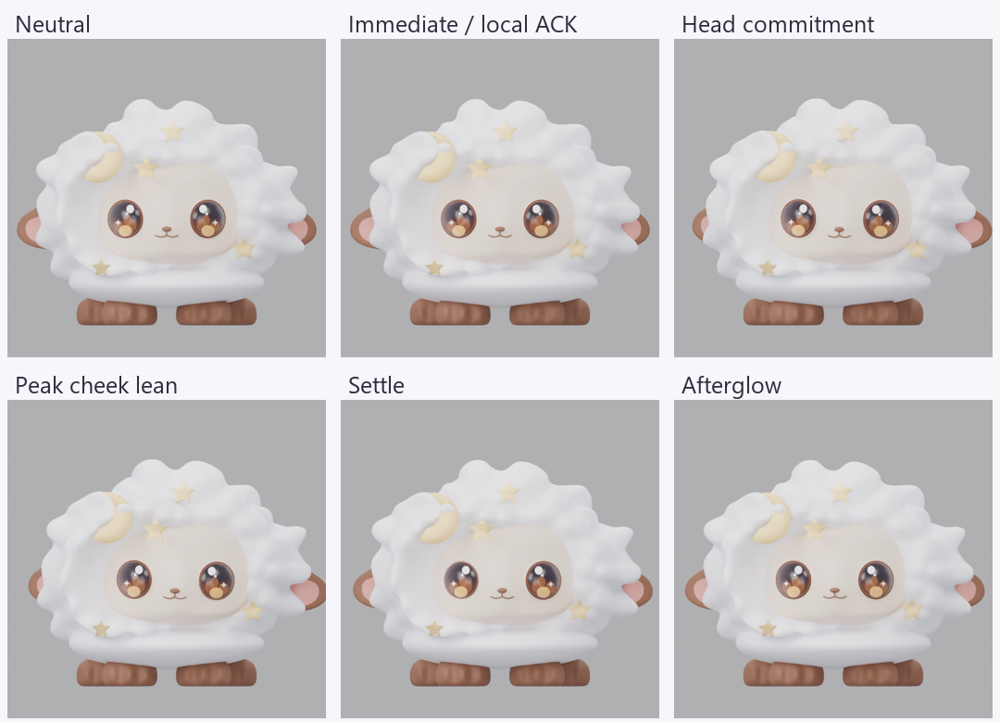

HUMAN EXPERIENCE REVIEW REQUIRED
Carol Hero Experience Probe v001 — Attempt 2
Historical Full-3D donor fleece is reused for this probe. The transferred fleece and its motion controls are provisional. No production geometry, fleece, rig or animation promotion is implied. Judge one cheek-touch phrase from the fixed front Hero camera.
1. Identity Authority
2. Hero Neutral

3. Authority Comparison

4. Primary Motion
Play, pause and scrub to inspect local contact, head commitment, peak lean, settle and afterglow.
5. Motion Contact Sheet

6. Human Questions
- Identity: Does this read unmistakably as Carol?
- Cuteness: Is Carol cute / appealing enough in the Hero view?
- Face / eyes: Do the face and oversized eyes remain attractive during motion?
- Fleece identity: Does the reused Full-3D fleece establish the intended Carol cloud silhouette strongly enough for this architecture test?
- Touch causality: Does the cheek-touch response visibly originate from the contacted region?
- Weight: Does Carol feel grounded rather than floating or sliding?
- Motion character: Does the interaction feel relaxed, soft and attention-seeking rather than generic or hyperactive?
- Geometry exposure: Is any head / jaw / cheek / chest defect visibly damaging the experience?
- Deformation: Does the lean introduce any obvious collapse, clipping, ugly intersection or loss of identity?
- Overall: Is this architecture promising enough to continue through targeted correction rather than another zero-based reconstruction?
- Probe validity: Is the reused fleece close enough to Carol's intended Hero appearance that the underlying v011 geometry and motion architecture can now be judged fairly?